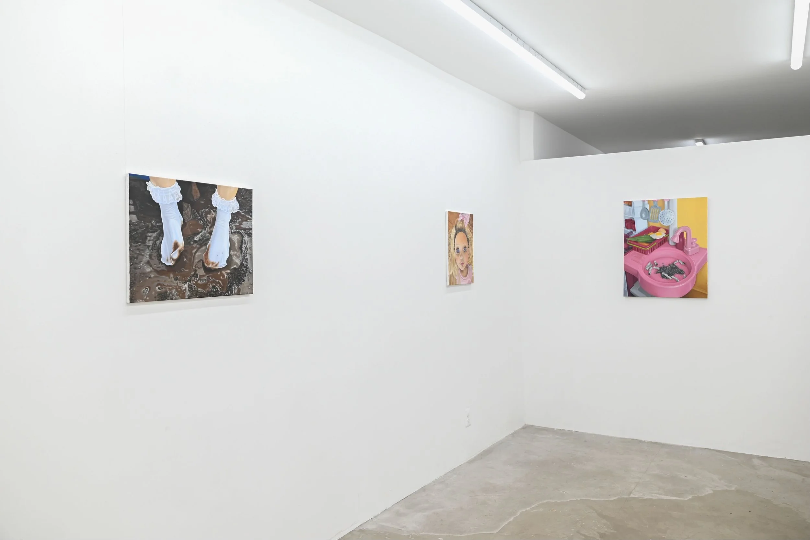
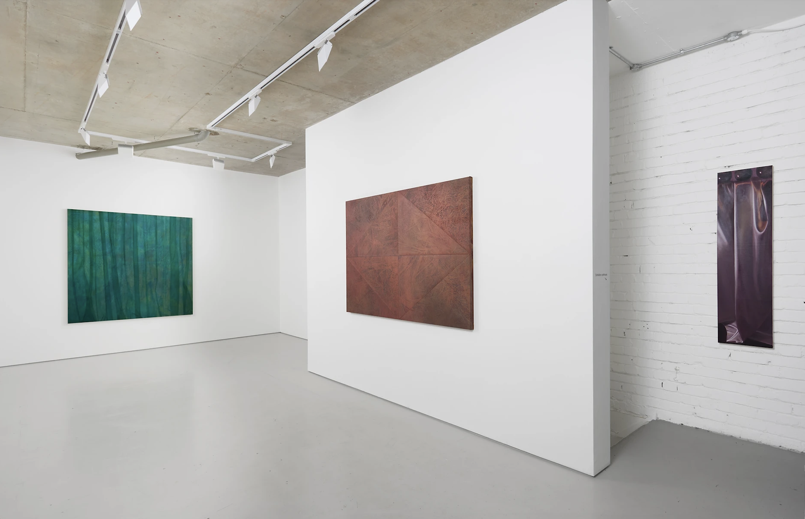
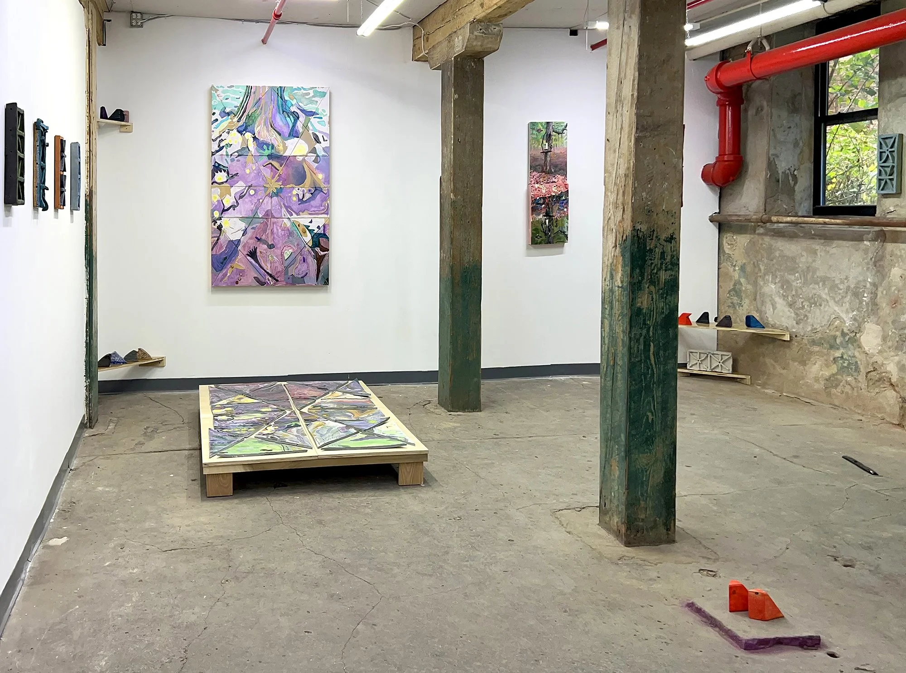
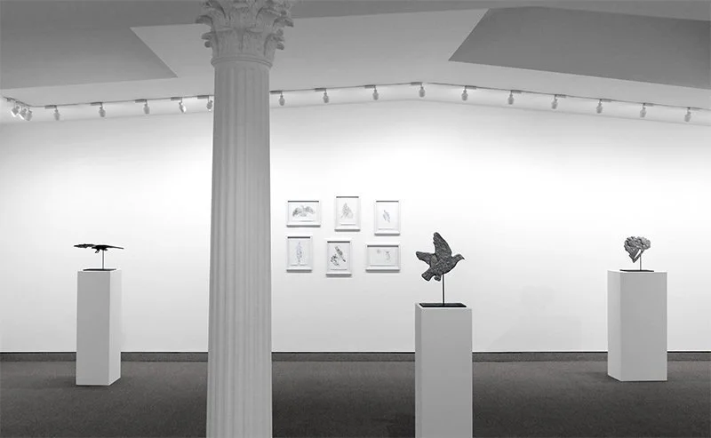
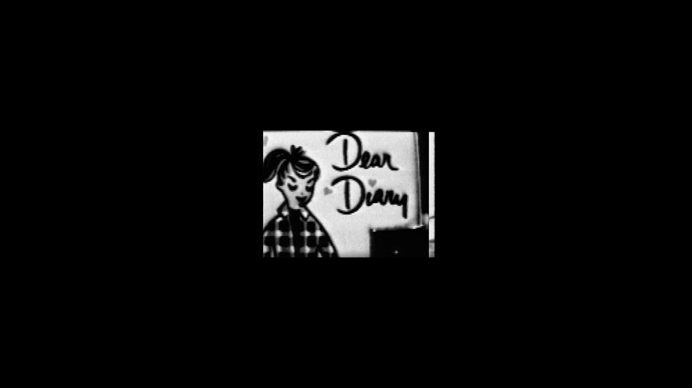
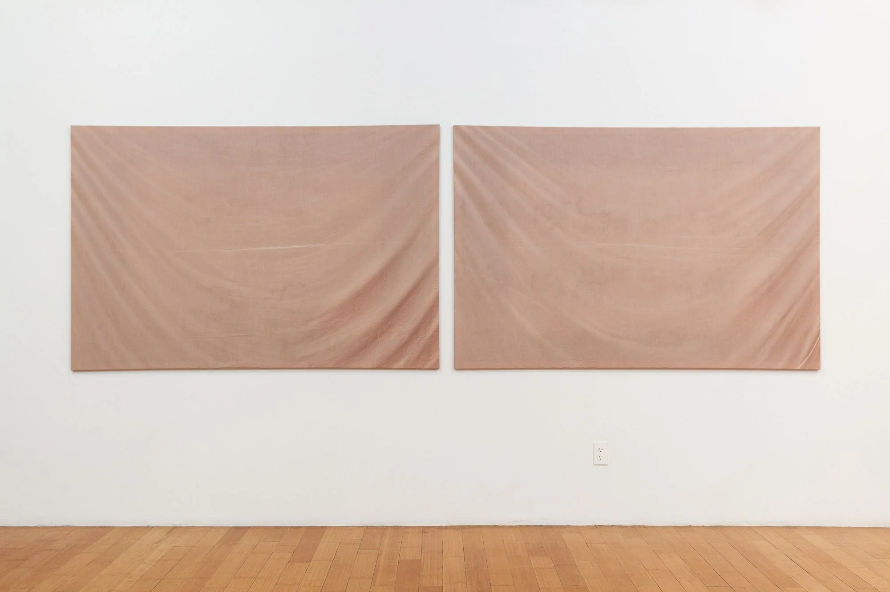

Playing House
Mack Brim, Blah Blah Gallery, Philadelphia, PA
February 21, 2025

Roast Pork and Bondage: Paintings by Mack Brim at Blah Blah Gallery, a review published with Philly Art Blog.
Read More →Mack Brim, Blah Blah Gallery, Philadelphia, PA
February 21, 2025

Roast Pork and Bondage: Paintings by Mack Brim at Blah Blah Gallery, a review published with Philly Art Blog.
Read More →Danielle Fretwell at Alice Amati, London, UK
March 1, 2024

Full text press release for the first solo exhibition of paintings by American artist Danielle Fretwell at Alice Amati, printed with the gallery’s exhibition materials.
Read More →AJ Rombach, Fjord Gallery, Philadelphia, PA
December 13, 2022

Grids, Reflections, and Seeing Double: AJ Rombach at Fjord, a review published with Title Magazine.
Read More →Krakow Witkin Gallery, Boston, MA
November 1, 2020

Sparsely hung and delicately crafted, a whisper of a show — Kiki Smith’s monoprints support her intricate and weighted sculptures.
Read More →Curated by Abigail Satinsky, Tufts University Art Galleries
September 30, 2020

A timely “shared discursive space” to explore identity — Tufts University Art Galleries presents an entirely online exhibition of videos featuring Sadie Benning, Alex Bag, and Wanda Raimundi-Ortez.
Read More →Tuesday Night MFA Lecture Series, Boston University College of Fine Arts
February 28, 2020

The artist’s work spans traditions of sculpture, performance, poetry, confessional, collage, and craft. It addresses relationships and power dynamics, hoarding and archiving, a slowing down of time.
Read More →